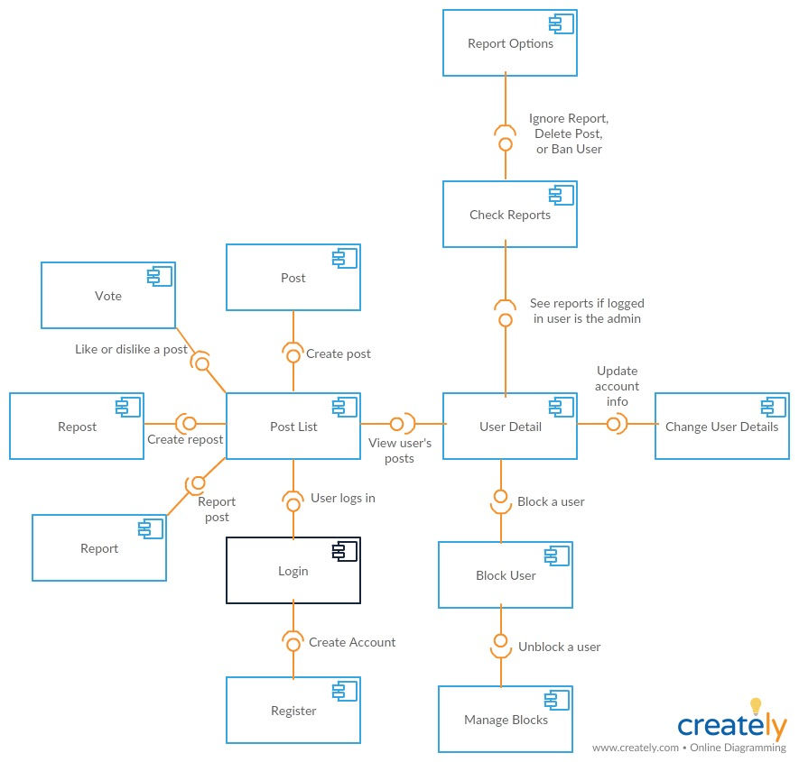

Earlier work · University software project · 2018
SMASH: a forum app with moderation built in
A five-person team, one semester, and a brief for a social platform where people create, view, and vote on posts. We shipped a PHP and MySQL forum with reposts, reports, and an admin flow that can delete a post, ignore a report, or ban the user. My part was the thinking around the code: the problem definition, use cases, software qualities, technical documentation, and the report itself.
- 5 people, one semesterSoftware development course
- Moderation built inReport, delete, ignore or ban
- 10 software qualitiesDefined and tested against
Build a small social platform that stays usable when people misbehave.
Wrote the requirements and use cases, defined the ten software qualities we tested against, documented the architecture and tooling, and produced the report.
A working forum with posting, voting, reposting, reporting, and admin moderation, tested for correctness, robustness, and performance on desktop and mobile.
The brief
A customer wanted a web application that behaves like a social platform: create an account, manage a profile, post, view others' posts, vote on them. Simple enough to build in a semester, and exactly the kind of thing that falls apart the moment a real person decides to be unpleasant. So the requirements I wrote gave moderation the same weight as posting.
Use cases
- Creating a post. Signed-in users write up to 250 characters. A live counter shows the count, and the post can't be submitted over the limit. Validation runs on both the front end and the back end.
- Viewing posts. The twenty most recent posts per page, with paging to older ones. Click a name to see everything that person has posted. Reposts show both the reposter and the original author.
- Reporting a post. Any user can report a post and gets a confirmation. Reports collect in the admin's profile.
- Moderating. For each report the admin can delete the post, ignore the report, or ban the user. Banning deletes the post and blocks login until the person contacts the administrator.

Poka-yoke, or mistake-proofing
Shigeo Shingo's idea from manufacturing: don't rely on people to avoid errors, shape the process so the error can't happen or is caught the instant it does. Human-factors research on error says the same thing from the other side. Slips are inevitable; the design's job is to make them cheap.
The forum's small details are all poka-yoke. The character counter turns red at 251 and the button won't submit. Every empty field says exactly what it needs. A ban removes the offending post in the same action, so the admin can't forget the second step. None of it is clever. It just stops people making easy mistakes.
Shingo, S. (1986). Zero Quality Control: Source Inspection and the Poka-yoke System. · Norman, D. A. (1983). Design rules based on analyses of human error. Communications of the ACM, 26(4), 254–258.Software qualities, then tests to match
I wrote ten qualities before the team wrote much code, each with a concrete meaning for this product: correctness (a profile can be created and changed, posts can be viewed, liked, disliked, created, reported), robustness (validation for login, registration, post length, and profile changes, plus auto-logout), efficiency (few steps for the important tasks), usability (AJAX refresh, quick response, a consistent theme, familiar actions), portability (responsive, all browsers except Internet Explorer), scalability, input validation, documentation, maintainability, and user friendliness.
The test plan mirrored the list: correctness tests per use case, robustness tests with deliberately bad input, and performance tests with multiple users interacting with the same post at once to check for data collisions. None were found.
What it taught me
- Write the qualities down first. Ten definitions turned "make it good" into a test plan the whole team could run.
- The admin side needed as much design as posting. Moderation is what kept the forum usable.
- Writing it up was design work too. Organising a forty-page report so five people's work reads as one system was the first time I did what I now do every day.